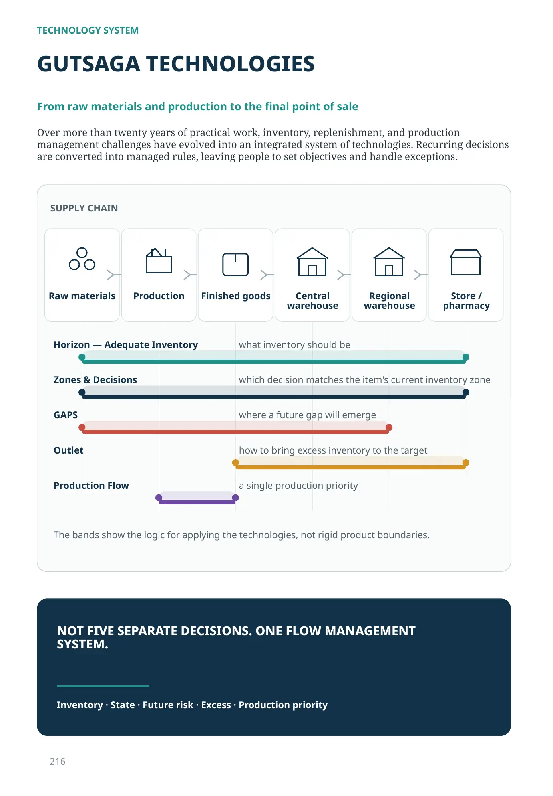

TECHNOLOGY SYSTEM
GUTSAGA TECHNOLOGIES
From raw materials and production to the final point of sale
Over more than twenty years of practical work, inventory, replenishment, and production management challenges have evolved into an integrated system of technologies. Recurring decisions are converted into managed rules, leaving people to set objectives and handle exceptions.
- Raw materials
- Production
- Finished goods
- Central warehouse
- Regional warehouse
- Store / pharmacy
- Horizon — Adequate Inventory what inventory should be
- Zones & Decisions which decision matches the item's current inventory zone
- GAPS where a future gap will emerge
- Outlet how to bring excess inventory to the target
- Production Flow a single production priority
The bands show the logic for applying the technologies, not rigid product boundaries.